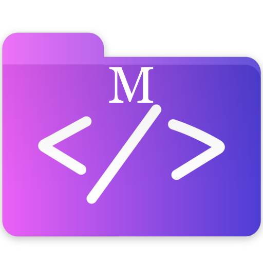

<mat-sidenav-container class="sidenav-container">
  <mat-sidenav [ngClass]="{hidden: !(isHandset$ | async) === true}" #drawer class="sidenav"
               fixedInViewport [attr.role]="(isHandset$ | async) ? 'dialog' : 'navigation'"
               [mode]="(isHandset$ | async) ? 'over' : 'side'" [opened]="(isHandset$ | async) === false" (click)="drawer.toggle()">
    <mat-toolbar color="primary" class="hvr-hang">
      {{appName}}
    </mat-toolbar>
    <mat-nav-list>
      <h2 matSubheader>Elementos de navegación</h2>
      <li *ngFor="let item of navbarLinks">

        <a *ngIf="!item.externalLink" mat-list-item routerLink="/{{ item.route }}" routerLinkActive="active"
           class="hvr-bounce-in">
          <i class="{{item.icon}}"></i> {{item.field}}
        </a>

        <!-- If with external link -->
        <a *ngIf="item.externalLink" mat-list-item href="{{ item.externalLink }}" routerLinkActive="active"
           class="hvr-bounce-in">
          <i class="{{item.icon}}"></i> {{item.field}}
        </a>

      </li>
    </mat-nav-list>
  </mat-sidenav>
  <mat-sidenav-content>
    <mat-toolbar color="primary">
      <button class="sidenav-btn" type="button" aria-label="Toggle sidenav" mat-icon-button (click)="drawer.toggle()">
       <i aria-label="Side nav toggle icon" class="fas fa-bars"></i>
      </button>
      <span class="minium-header-pads">
        <a routerLink="/home" routerLinkActive="active" class="hvr-pop">
          <span
          class="main-navbar-text">{{appName}}</span>
        </a>
      </span>

      <span class="fill-space"></span>
      <div *ngFor="let item of navbarLinks">
        <button *ngIf="!item.externalLink" routerLink="/{{ item.route }}" routerLinkActive="active" mat-button
                class="hvr-bounce-in top-navbar-item">
          <i class="{{item.icon}}"></i> {{item.field}}
        </button>

        <!-- If with external link -->
        <a class="external-link" href="{{item.externalLink}}">
        <button *ngIf="item.externalLink" mat-button
                class="hvr-bounce-in top-navbar-item">
          <i class="{{item.icon}}"></i> {{item.field}}
        </button>
        </a>
      </div>

      <div class="hvr-bounce-in top-navbar-item">
      </div>

    </mat-toolbar>
    <!-- Content -->
    <ng-content></ng-content>
  </mat-sidenav-content>
</mat-sidenav-container>
